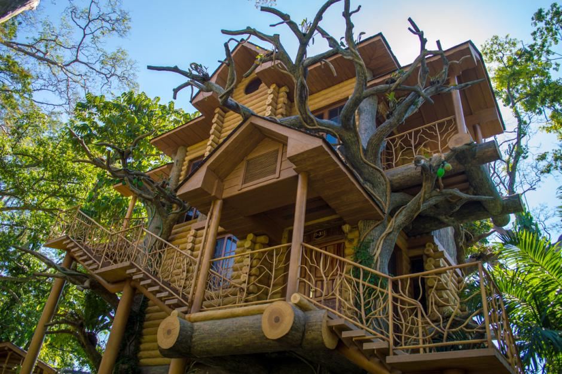
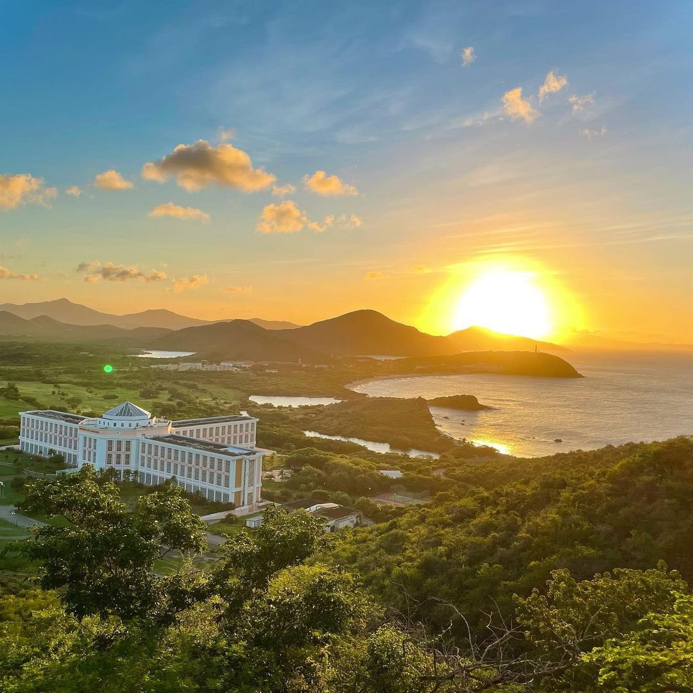

|  |  |
|
Jake entendió que no todo viaje termina con un regreso. La isla dejó de ser una prisión y se convirtió en un hogar que lo aceptó sin condiciones. Con los años, protegió el equilibrio del lugar y guió a sus habitantes con respeto, usando la experiencia de alguien que conoció el peligro y decidió no repetirlo. A veces miraba el cielo recordando su antigua vida, pero nunca se arrepintió. En una isla olvidada por el mundo, Jake encontró pertenencia y propósito. |
|